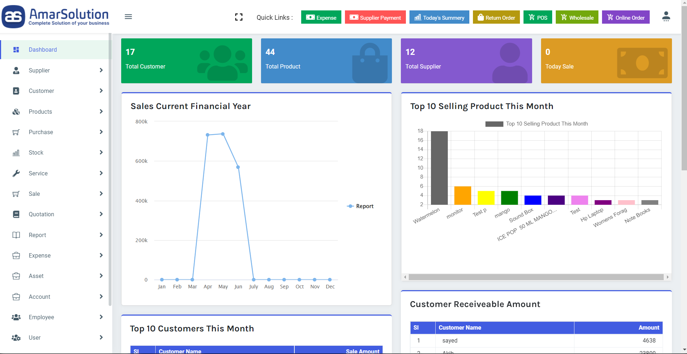

Best POS Software in Bangladesh
Introduction
When it comes to choosing the best POS software for your business, there are a few things you need to consider. One of the most important factors is what type of business you have. If you have a restaurant, for example, you'll want to make sure that the software is designed specifically for restaurants.

Another thing to consider is what features you need. Some software programs are very basic, while others offer a wide range of features. You'll also want to think about how easy the software is to use and whether it will integrate with other systems you use, such as your accounting software. With so many options on the market, it can be difficult to know where to start. However, if you keep these factors in mind, you should be able to find the best POS software in Bangladesh for your business.
What is POS SOFTWARE?
POS software is a type of computer program that is used to process sales transactions in a retail environment. The software typically includes features such as inventory management, customer tracking, and sales reporting.
POS systems are an essential part of running a successful retail business, as they help to streamline the sales process and provide valuable data about customer behavior. While there are many different types of POS software on the market, they all share the same core functions. By choosing a POS system that is best suited to the needs of their business, merchants can ensure that their sales operations run smoothly and efficiently.
Best POS Software in Bangladesh
Amar solution is the best POS software in Bangladesh that makes your business easy and simple. With this software you can easily manage your inventory, customers and staff. This software is very user friendly and it has all the features that you need to run your business smoothly. It is also very affordable and it comes with a free trial so that you can try it before you buy it. Amar solution is the best choice for small businesses in Bangladesh.
Amar solution POS software has so many features. Any business that relies on sales needs a good POS (point-of-sale) system. A POS system is a software application that helps businesses keep track of customer orders, inventory levels, and sales data. A good POS system can help businesses run more efficiently and improve customer service. Some of the most important features to look for in a POS system include:
Order Management
The ability to view and manage customer orders quickly and easily is essential for any business. A good POS system will allow businesses to keep track of order history, track customer preferences, and process returns quickly and easily.
Inventory Management
An effective POS system will help businesses keep track of inventory levels, reorder products when necessary, and track sales data to help identify trends.
Customer Management
A good POS system will allow businesses to store customer information, such as contact information and purchase history. This information can be used to improve customer service, target marketing campaigns, and build loyalty among customers.
Reporting
A good POS system will generate reports that can help businesses track sales data, identify trends, and make informed decisions about where to focus their efforts.
Retail Management
Retail management of a POS software system is critical to the success of any retail business. A POS software system helps retail businesses keep track of inventory, sales, and customers. It also provides a way for businesses to accept credit and debit card payments. A POS software system can be used to manage a single retail store or a chain of stores. Retail businesses that use a POS software system can increase their sales and efficiency.
Account & Finance Management
One of the most important aspects of POS software is account and finance management. This feature allows businesses to better understand their financial situation and make informed decisions about where to allocate their resources. POS software can help businesses save time and money by streamlining the accounting process and providing easy-to-use tools for managing finances.
| Package Name |
Installation cost |
Service & server cost |
Order Now |
| Amarsolution Basic |
9,999 TK. |
999 TK. |
Order Now |
| Amarsolution Standard |
19,999 TK. |
1,499 TK. |
Order Now |
| Amarsolution Premium |
49,999 TK. |
2,999 TK. |
Order Now |
FAQ
Does KFC Use POS Software
All businesses use some form of POS, or point of sale, software. This software allows businesses to track sales and inventory, and can also be used to process payments. KFC is no exception; the fast food chain uses a customized version of the MICROS Simphony point of sale system. This system was specifically designed for restaurants, and includes features such as order management and customer tracking.
In addition, KFC's POS software is integrated with the company's loyalty program, allowing customers to easily earn and redeem rewards. As a result, KFC's POS system is an essential part of the company's business model. Not only does it help to streamline operations, but it also provides valuable data that can be used to improve the customer experience.
Can I Use Phone As POS?
Thanks to advances in mobile technology, it is now possible to use a smartphone as a POS system. There are a number of apps available that can turn a phone into a fully functioning POS system, complete with features like inventory management and customer tracking. Using a phone as a POS system has a number of advantages. It is cheaper than traditional POS systems, and more flexible, as it can be used anywhere.
In addition, it is easier to set up and use, making it ideal for small businesses who might not have the time or resources to invest in a more complex system. However, there are also some disadvantages to using a phone as a POS system. The battery life of most smartphones is relatively short, which means that they might need to be charged frequently during busy periods. In addition, phones are vulnerable to damage and theft, which could lead to costly repairs or replacements.
Conclusion
Amar Solution, The best POS software in Bangladesh is the one that offers the most comprehensive features and the best value for money. Consider your business needs carefully before making a decision, and make sure to compare several different options before settling on a final choice. With a little research, you should be able to find the perfect POS system for your business.